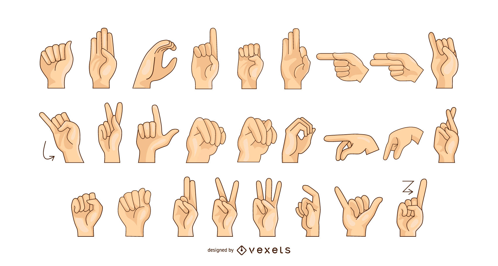
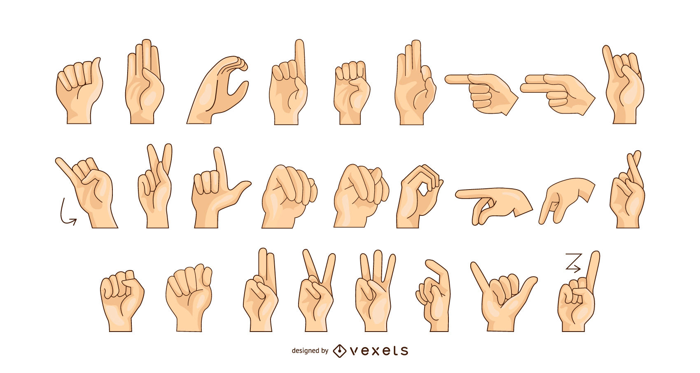

OFRESEMOS LA FORMA MAS FACIL DE APRENDIZAJE HASTA EL MOMENTO

OBJETIVOS Y METAS DE NUESTRO PROYECTO
Nuestro objetivo El objetivo de nuestro proyecto formativo es crear e implementar una pagina web para facilitar la comunicación e interacción de la comunidad de las personas con discapacidad auditiva de la primera infancia mediante forma de aprendizaje interactivo MISION Una de las mayores dificultades a las que se enfrentan las personas sordas se presentan a la hora de relacionarse con otras personas en la medida en que no se comparte el mismo código lingüístico VISION Por medio de una pagina pagina web educativa que enseñe de manera interacitva el lenguaje de señas, con esto se busca que niños de la primera infancia se interesen en aprender el lenguaje de señas


El aprendiz sena es aquella persona con conciencia crítica, constructiva y respetuosa con las ideas propias y la de los demás, con capacidad de dar solución a los problemas que se enfrenta a diario.se deja guiar por sus valores y principios buscando así el bien para los demás y el de si mismo. Es una persona creativa que puede transformar una situación y no se deja vencer por los obstáculos que se presentan en su vida diaria y consigue lo que se propone, se adapta al cambio global enfrentándose con responsabilidad a las situaciones de nuestro diario vivir